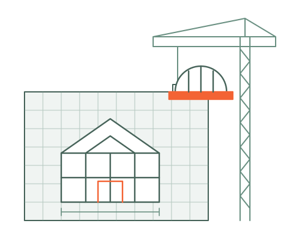

Construction Bookkeeping
Run your projects with up-to-date control over budget, schedule, and risk.
Bookkeeping for contractors and the trades from your personal team of financial experts. Keep your books current, understand your reports and protect your business with organized records. Need detailed job costing? Ask about our add-on service, best supported by actual-basis bookkeeping.
or call 866-443-8879
For general contractors, specialty trades, remodelers and artisans. Most construction clients are up and running in a couple of weeks.

Trusted by contractors and artisans across the U.S.
U.S.-based team
A personal team of financial experts on every account
Works with QuickBooks, Procore, Buildertrend and ADP
The Problem
When the books fall behind, you lose control of budget, schedule and risk at the same time.
Budget slips first. Labor, materials and sub invoices land on the wrong job or wait in a pile, so you find out what a project really cost after it's closed. Billing falls behind the work, and nobody can say for sure whether a job is ahead, behind or on track.
Then risk builds quietly. Certified payroll for a prevailing wage job, retainage you're still owed, subs waiting to be paid, records an auditor might ask for. Running crews while managing cash flow, payroll compliance and job costs is no easy feat, and something usually gives.
Complete Controller puts all three back under your control.
Your team keeps job costs current, tracks billing against the work, and keeps payroll compliance and payments in order, so you can keep building with confidence.
What You Get
Control over every part of the job.
Budget
Schedule
Risk
Budget
Job costing as an add-on
Add detailed tracking of labor, materials, subs and overhead by project. Job costing is an add-on service, best supported by actual-basis bookkeeping.
Budget
Clear income and expense reports
Current income and expense reports help you understand spending and plan conversations about payroll, purchases and cash needs.
Schedule
WIP schedules with over and under billing
Work-in-progress schedules that show whether each job is ahead, behind or right on track with its billing.
Schedule
Billing that keeps pace with the work
Proactive cost and profit visibility on every job, so billing and costs stay matched to how far along the work really is.
Risk
Certified payroll and prevailing wage
Certified payroll reports generated and prevailing wage requirements managed, with records kept audit-ready.
Risk
Retainage and subcontractor payments
Retainage accounted for and subs paid on time, so no costs slip through the cracks. Your data is encrypted and stored securely in the cloud.
Your Team on Every Account
Your personal team of financial experts, built for contractors.
Budget, schedule and risk, kept under control by your team.
Every Complete Controller account comes with a Controller who oversees your numbers, a Bookkeeper who keeps them current, and CAS-i, our AI, so you can check on any job between conversations.
Reviews the numbers and plans ahead with you.
Reviews job costs and WIP schedules, flags jobs drifting over budget or behind on billing, keeps records audit-ready and plans ahead with you.
Keeps your books current.
Codes costs to the right job, keeps billing, retainage and sub payments current, and reconciles your accounts in QuickBooks, Procore, Buildertrend and ADP.
Numbers that make sense, any time you ask.
Ask questions about job costs, billing or cash flow in plain language and get clear answers that help you decide what to do next. CAS-i explains your numbers and never changes your books.
How It Works
Getting started takes three steps.
Step 01
Book a free consultation
Tell us about your jobs, crews and current setup. We'll recommend the right level of support and give you a clear price.
Step 02
We set up your controls
We get your books and existing tools in order. If you choose the job-costing add-on, we scope it to your trade and reporting needs. Most construction clients are up and running in a couple of weeks.
Step 03
Stay in control every month
Your Bookkeeper keeps everything current, your Controller sends reports on budget, billing and compliance for every job, and CAS-i answers questions in between.
Your Team, Any Time
Numbers that make sense, so you can make better decisions.
CAS-i is Complete Controller's AI and the member of your team you can reach any time. Ask about your numbers in plain language, by voice or chat, and get clear answers about what they mean, so you can make better-informed decisions about your business. CAS-i never changes your books; your Controller and Bookkeeper do the work, and your Controller still plans ahead with you.
Ask CAS-i
Which jobs are over budget this month?
Ask CAS-i
What did we spend on materials last month?
Ask CAS-i
How much retainage are we still owed?
Choosing a Plan
Three levels for contractors.
The right level depends on how many jobs you run at once and how often you need your numbers updated. Most busy contractors choose Complete.
Steady small contractors
Basic
$405 / month
One-time setup: $1,450
Best for: contractors who need monthly bookkeeping and a full report package to understand income, expenses and account balances. Detailed job costing is available as an add-on.
- Monthly bookkeeping
- Full report package
- Your Controller, Bookkeeper and CAS-i
Busy job loads
Complete
$970 / month
One-time setup: $1,650
Best for: contractors who need weekly bookkeeping, custom reports and audit-ready records. Ask about actual-basis bookkeeping and the job-costing add-on for project-level reporting.
- Weekly bookkeeping
- Custom report package
- Audit ready
- Your Controller, Bookkeeper and CAS-i
High-volume contractors
Premier
$1,835 / month
One-time setup: $1,850
Best for: high-volume contractors who want their numbers updated every day and their CPA working alongside the team.
- Daily bookkeeping
- Custom report package
- CPA collaboration
- Your Controller, Bookkeeper and CAS-i
Each plan has a one-time setup fee to get your books ready. Have an in-house bookkeeper you want to keep? Ask about our Oversight and Training services. See all plans and pricing.
Not sure which level fits? We'll recommend one on the call.
Client Stories
What Contractors Say
“Complete Controller has been a huge support to our in-house accounting team. They did a great job supporting our construction business with special reports and monthly reconciliations. We appreciate everything you do!”
“My Complete Controller bookkeeper has done an excellent job with my accounting.”
“Complete Controller has been fantastic, we have loved working with you the past 5 years!”
“Thank you, and all the staff at Complete Controller, for your services over the years. You were an important part of helping us to grow our business.”
Questions
What contractors ask before they switch.
Can you track profitability by job or project?
Yes. Detailed job costing is available as an add-on, best supported by actual-basis bookkeeping. We scope labor, materials, subs and overhead tracking to your projects and quote it separately from base bookkeeping.
How do you help with work-in-progress (WIP) reporting?
We create WIP schedules that track over and under billing, so you can see whether each job is ahead, behind or right on track.
Do you handle certified payroll and prevailing wage compliance?
Yes. We generate certified payroll reports, manage prevailing wage requirements and keep your records audit-ready.
Can you keep track of retainage and subcontractor payments?
Yes. We make sure retainage is accounted for, subs are paid on time and no costs slip through the cracks.
Do you offer reports that help me manage cash flow?
Yes. Your income and expense reports give you current financial information to discuss with your Controller when planning cash needs.
What if I already use Procore, Buildertrend or QuickBooks?
That works. We work with all three, plus ADP, so your financial data stays in step with the systems you already use.
Can I keep my in-house bookkeeper and just use oversight?
Yes. Many construction companies use our Oversight and Training services. We review your QuickBooks, catch errors and give you year-end clarity.
How much does construction bookkeeping cost, and how fast can we start?
Most contractors fit Basic at $405 a month or Complete at $970 a month, plus a one-time setup fee. Most construction clients are up and running in a couple of weeks.
Get Started
Talk With an Expert
Complete Controller · Free Consultation
Request your free financial consultation. Our team will respond within 24 hours.